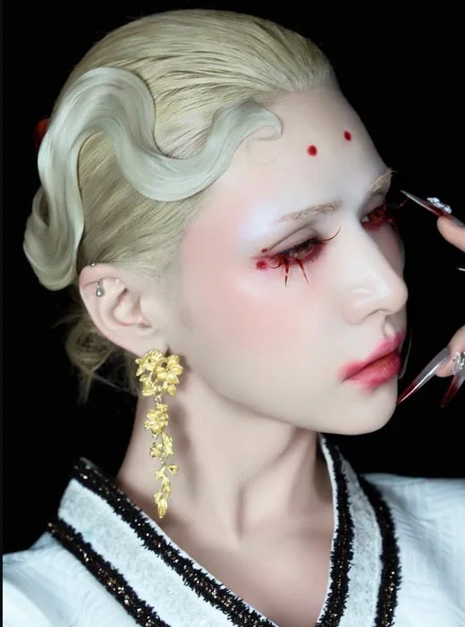
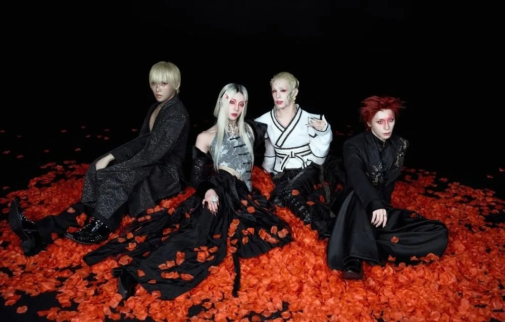
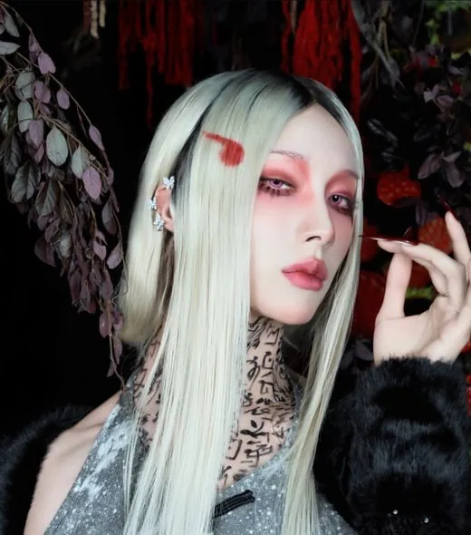
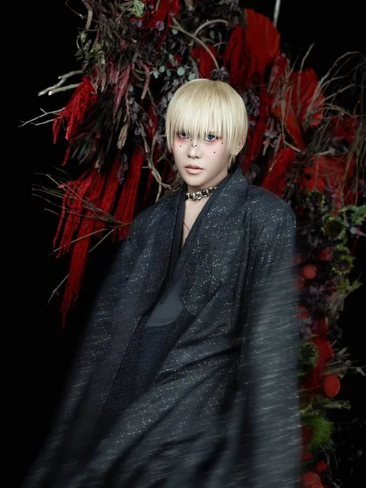
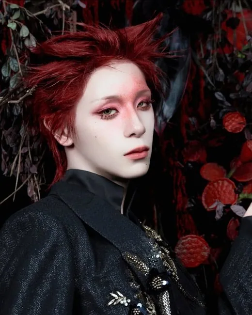

Wumuti
Wumuti (우무티) · Leader, production musicale

GIRL GROUP · K-POP
Découvre le groupe XLOV et les profils de ses membres : Wumuti · Rui · Hyun · Haru.
Ouvrir la fiche interactive XLOVXLOV promeut un concept "genderless" (looks et chorégraphies non genrés). Les membres utilisent n'importe quels pronoms, d'où des formulations neutres sur cette page. Le label précise qu'il s'agit d'un choix artistique du groupe et que les membres ne s'identifient pas publiquement comme LGBTQ+ à titre personnel — le groupe reste néanmoins très suivi par le public queer pour son esthétique. Débuts le 7 janvier 2025 avec le single album « I'mma Be » ; 3e mini-album « I, God » sorti le 27 mai 2026 (titre « 法則:The Rules »). Lineup de gauche à droite sur les photos : Hyun, Rui, Wumuti, Haru. Sources : KProfiles, Wikipédia.
Débuts : 7 janvier 2025
Agence : StrangeLab (anciennement 257 Entertainment) ; label WM Entertainment

Wumuti (우무티) · Leader, production musicale

Rui (루이) · Danse principale, vocal secondaire, visuel (touche-à-tout)

Hyun (현) · Vocal principal

Haru (하루) · Maknae (le ou la plus jeune)